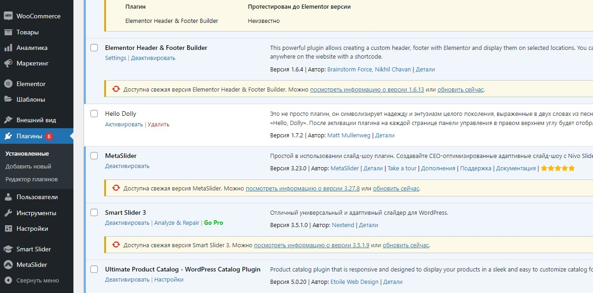

Плагины — это инструменты, которые созданы пользователями и компаниями из сообщества WordPress, чтобы добавить новые функции WordPress.
Были добавлены слудующие плагины:
1. Smart Slider 3 - отличный универсальный и адаптивный слайдер для WordPress;
2. Contact Form 7 - конструктор контактных форм. Простой, но гибкий;
3. WooCommerce - инструмент электронной торговли, помогающий продавать все что угодно. Красиво.

Рисунок 2.4 Добавление плагинов